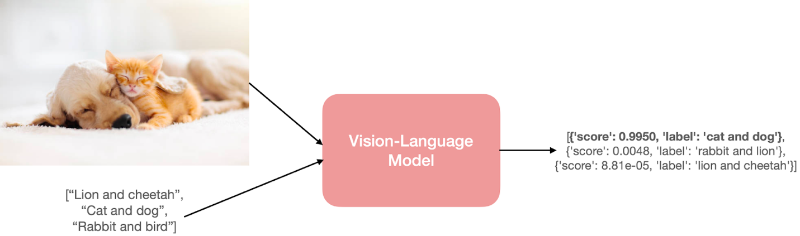
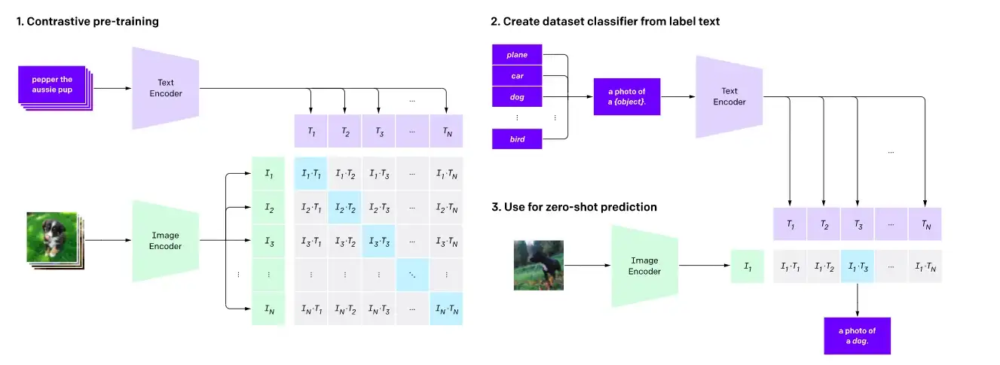
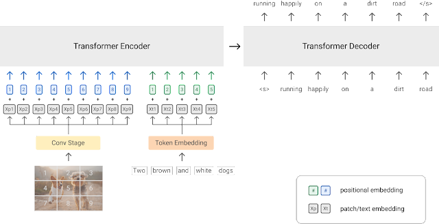
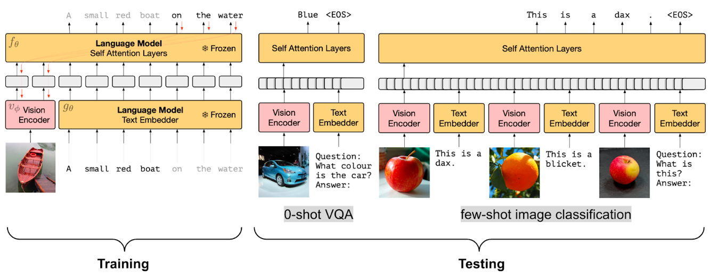
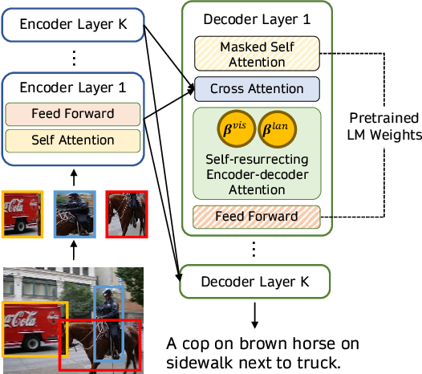
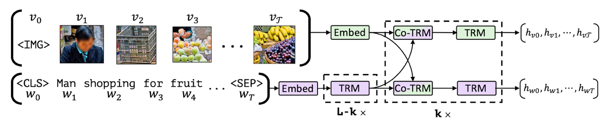
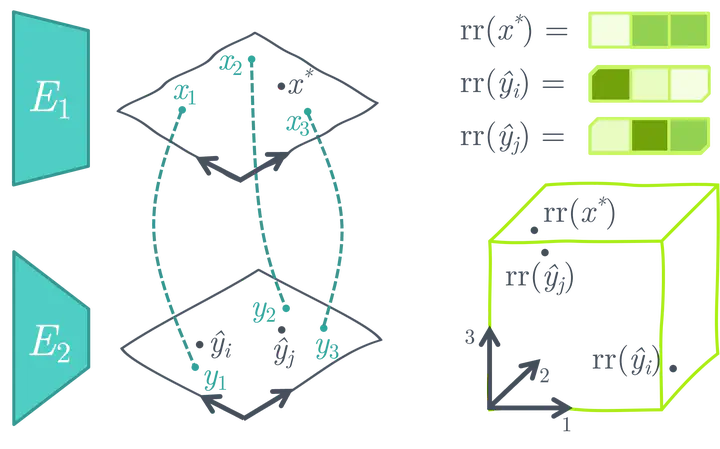

A Dive
into Vision-Language Models
Background:
Introducing joint vision-language models focusing on how they're
trained
vision-language” model has their ability to process both images (vision) and
natural language text (language). This process depends on the inputs,
outputs, and the task these models are asked to perform.

How to predict? The model needs to
understand both the input image and the text prompts.
Various Form Example:
a.
Image retrieval from natural language text.
- Phrase grounding, i.e.,
performing object detection from an input image and natural language
phrase (example: A young person swings a bat).
- Visual question answering,
i.e., finding answers from an input image and a question in natural
language.
- Generate a caption for a
given image. This can also take the form of conditional text
generation, where you'd start with a natural language prompt and an image.
- Detection of hate speech
from social media content involving both images and text modalities.
1. Methodology
Five core learning strategies for training vision-language models
(VLMs):
- Contrastive Learning
It aims to align representations of images and text into a
shared embedding space, where semantically similar pairs (e.g., an image and
its caption) are close, while dissimilar pairs are far apart.

a) Goal: Align image and text
embeddings into a shared space (e.g., CLIP, ALIGN).
b) Loss: Contrastive loss
(e.g., cosine similarity) to minimize distance between matched pairs and
maximize for mismatched pairs.
c) Strengths: Enables zero-shot
generalization (e.g., image classification).
- PrefixLM

a) Process: Treat image patches
as a prefix to text sequences, training autoregressive models (e.g., SimVLM,
Frozen).
b) Use Case: Image captioning,
VQA.
c) Variants: "Frozen"
methods freeze pre-trained language models (LMs) and train only image encoders
(e.g., ClipCap).
- Frozen PrefixLM

- Multi-modal Fusing with
Cross-Attention

a) Mechanism: Inject visual
embeddings into LM layers via cross-attention (e.g., VisualGPT, Flamingo).
b) Advantage: Balances text
generation with visual context without massive datasets.
- Masked-Language Modeling (MLM) /
Image-Text Matching (ITM)

a. Tasks:
i. MLM: Predict masked
text tokens using image context.
ii. ITM: Classify if
image-text pairs match.
b. Models: VisualBERT, FLAVA
(combines MLM, ITM, and contrastive loss).
- No Training

Approach: Use frozen
pre-trained models (e.g., ASIF uses similarity search; MaGiC uses CLIP for
iterative optimization).
2. Model Characteristics
Key models and their features:
- CLIP: Contrastive learning for
zero-shot tasks; dual encoders for image/text.
- FLAVA: Combines contrastive, MLM,
ITM, and masked-image modeling (MIM) for multi-task learning.
- Flamingo: Inserts cross-attention layers
into frozen LMs/video encoders for few-shot learning.
- OWL-ViT/CLIPSeg: Enable zero-shot object
detection/segmentation via text prompts.
- ViLT: Lightweight architecture for
VQA using patch embeddings (no object detectors).
- VisionEncoderDecoder: Flexible framework (e.g.,
TrOCR for OCR).
Common Architectural Traits:
- Use of transformer-based
encoders.
- Fusion via cross-attention or
shared embedding spaces.
- Pre-training on large-scale
image-text datasets (e.g., LAION-5B, COCO).
3. Gaps & Limitations
- Task Specificity: Models like PrefixLM are
limited to generation tasks (e.g., captioning).
- Data Dependency: Require massive, noisy
datasets (e.g., LAION-5B); alignment quality affects performance.
- Modality Constraints: Most focus on image-text;
video/audio/3D integration is nascent.
- Computational Cost: Training/fine-tuning large
VLMs is resource intensive.
- Robustness: Vulnerable to adversarial
attacks and bias inherited from web data.
4. Future Research Opportunities
- Expanded Modalities:
- Integrate video (e.g., X-CLIP),
audio, 3D data (e.g., CLIP-NeRF), and sensor inputs (e.g., robotics).
- Efficient Training:
- Few-shot/zero-shot adaptation
(e.g., Flamingo’s few-shot capabilities).
- Lightweight architectures for
edge deployment.
- Domain-Specific Applications:
- Medical (e.g., diagnosis via
radiology reports), robotics (e.g., CLIPort for manipulation).
- Improved Alignment Strategies:
- Better handling of noisy data
(e.g., ALIGN’s noise mitigation).
- Open-vocabulary detection
(e.g., OWL-ViT).
- Ethical & Robust Models:
- Mitigate biases and improve
fairness in multi-modal outputs.
5. Practical Takeaways
- Hugging Face Support: 🤗
Transformers provides implementations for CLIP, ViLT, CLIPSeg, and others,
enabling easy experimentation.
- Emerging Applications: From medical imaging to 3D
scene manipulation (e.g., AvatarCLIP), VLMs are enabling cross-domain
innovation.